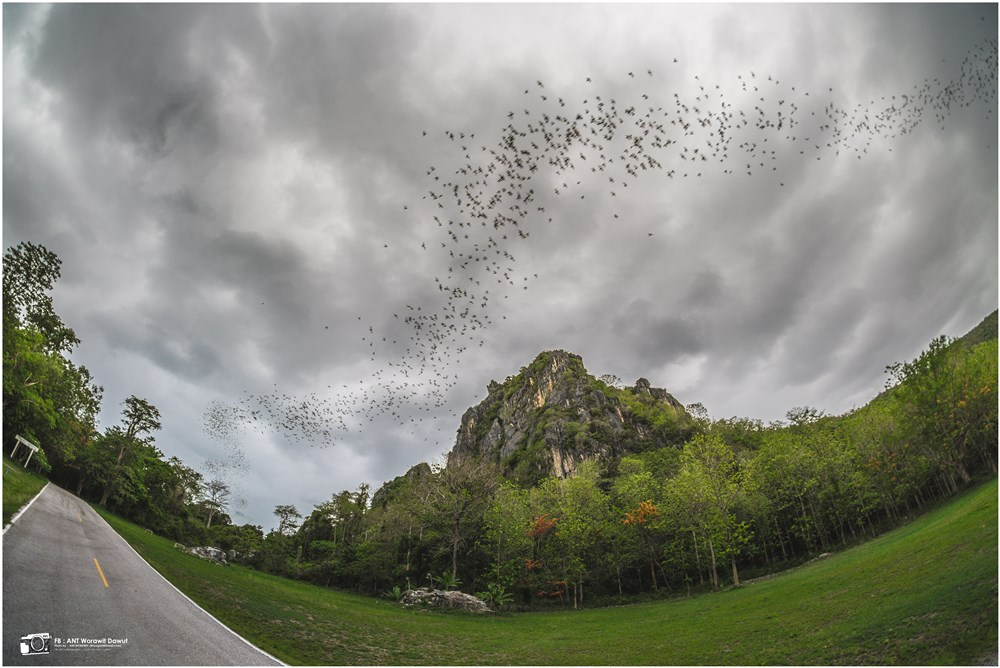
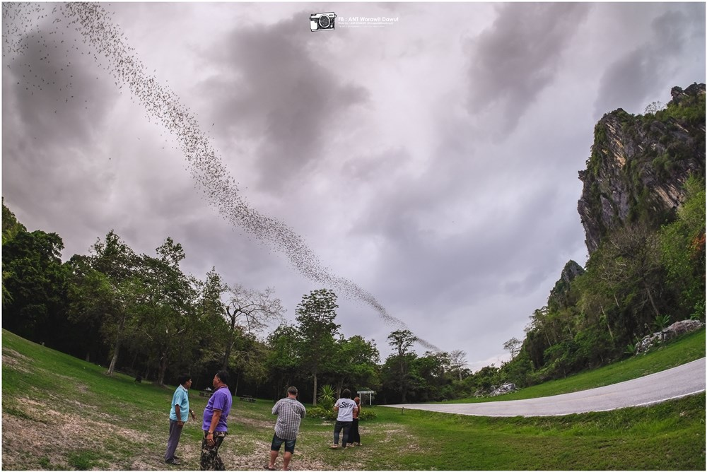
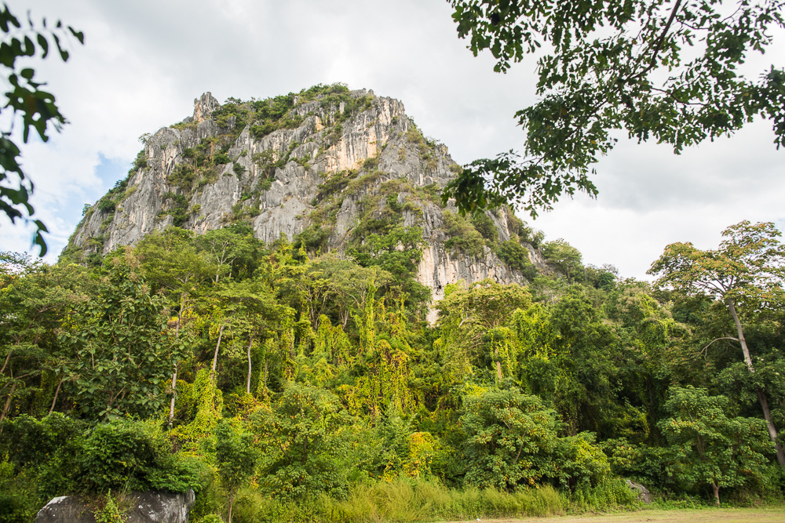

ถ้ำเจ้าราม

ถ้ำเจ้าราม
เดิมปรากฏอยู่ในปลักศิลาจารึกพ่อขุนรามคำแหงมหาราช ต่อมาชาวบ้านแถบนั่นเรียกเพี้ยนไปเป็น “ถ้ำเจ้าราม” จากหลักฐานและคำบอกเล่าสันนิษฐานว่าถ้ำเจ้ารามน่าจะมีความเกี่ยวข้องกับพ่อขุนรามคำแหง อยู่ 2 ประการ ประการที่ 1 เป็นที่พักผ่อนของพ่อขุนรามฯ เพราะเป็นบริเวณถ้ำที่มีปรากฏการณ์ธรรมชาติที่สวยงาม ประการที่ 2 เป็นที่หลบภัยจากข้าศึกศัตรู เพราะในบริเวณส่วนกลางของถ้ำเป็นที่โล่งกว้างด้านบนมีปล่อง แสงอาทิตย์ส่องลงมาได้ สามารถบรรจุคนได้มากพอสมควร และยังมีแผ่นศิลาจารึกเป็นภาษาสุโขทัยปรากฏอยู่ในถ้ำ ชาวบ้านเชื่อกันว่าในระหว่างการเข้าชมถ้ำเจ้าราม ไม่สมควรพูดจาหยาบคายหรือลบหลู่ และมิควรกระทำมิดีเพราะจะเกิดสิ่งที่ไม่คาดคิดต่าง ๆ ได้ เช่น มูลค้างคาว ซึ่งมีค่ามหาศาลทำให้เกิดความโลภของมนุษย์ จนเกิดเพทภัยถึงแก่ชีวิตมาแล้วหลายคนจุดเด่นทางธรรมชาติ
- ถ้ำพระราม เป็นที่อยู่อาศัยของค้างคาวกินแมลงหลายชนิด ที่สำคัญคือ ค้างคาวปากย่น มีประมาณ แปดแสน - หนึ่งล้านตัน จะออกมาหากินในตอนเย็นโดยบินต่อกันเป็นทิวสาย สวยงามประทับใจแก่ผู้พบเห็นเป็นอย่างยิ่ง
- ต้นสักใหญ่ เป็นต้นสักขนาดใหญ่ที่ยืนต้น และยังมีชิวิตอยู่สูงประมาณ 25 เมตร เส้นรอบวงประมาณ 630 ซม. อยู่ห่างจากถ้ำพระรามไปทางทิศเหนือประมาณ 3 กม.
- ดงจันทน์ผา เป็นสังคมพืชเขาหินปูน โดยมีต้นจันทน์ผาขึ้นเป็นกลุ่มใหญ่อยู่หลังหน่วยพิทักษ์ป่าเชิงผาน้ำตกเชิงผา เป็นน้ำตกที่เกิดจากแหล่งน้ำซับ ที่ผุดขึ้นจากใต้ดิน มี 3 ชั้น ชั้นบนสูงสุดประมาณ 20 เมตร
- อ่างเก็บน้ำหนองเคาะ เป็นอ่างเก็บน้ำขนาดเล็ก อยู่บริเวณหน้าหน่วยพิทักษ์ป่าวังตะเคียน เป็นที่พักผ่อนของประชาชนในการตกปลา


สถานที่ตั้ง
-
ตำบล นาขุนไกร อำเภอ ศรีสำโรง สุโขทัย 64120